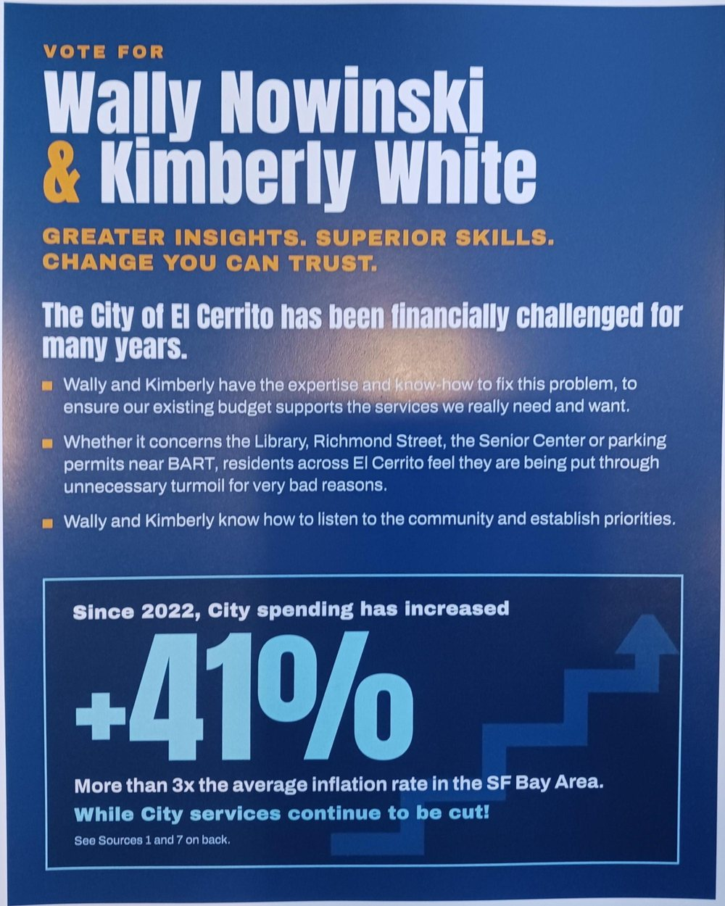
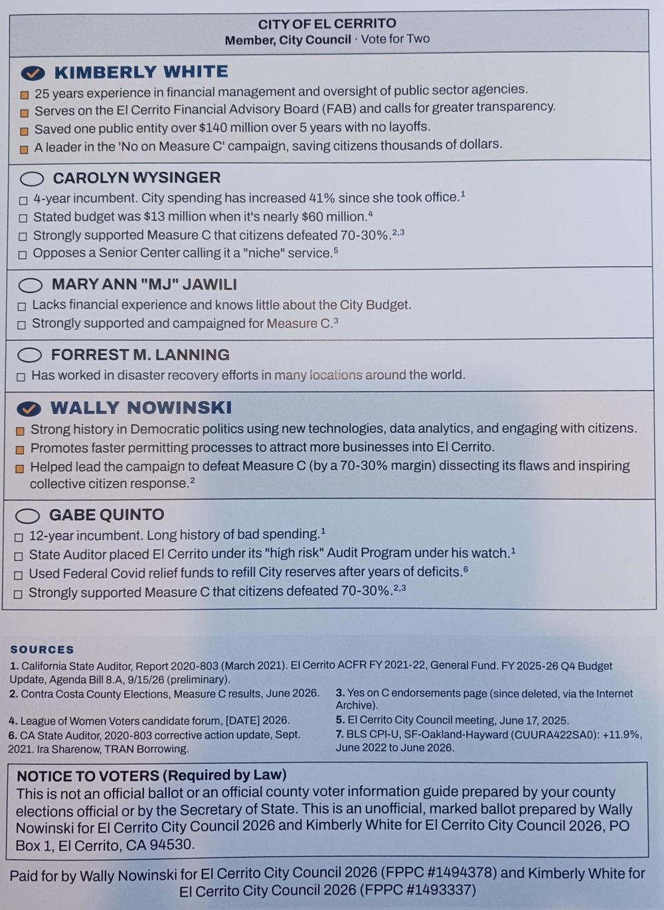
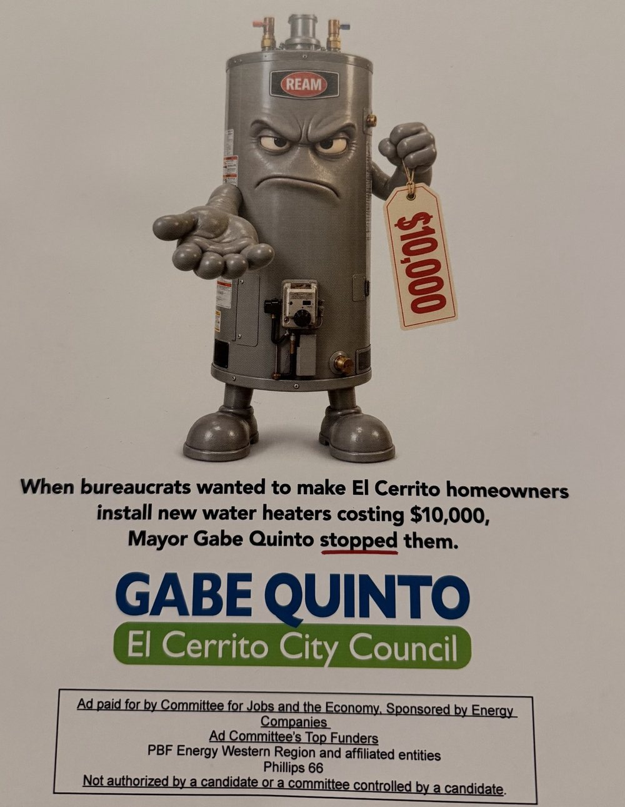
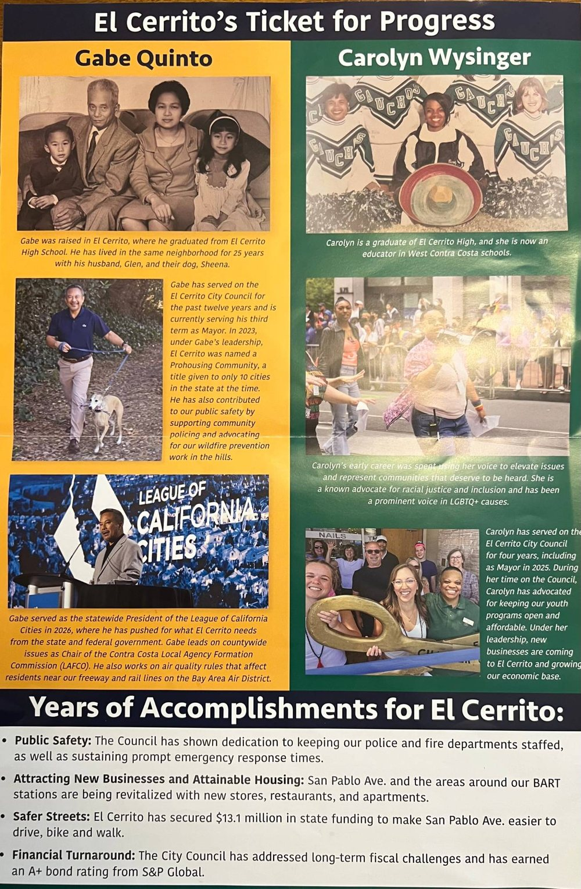

Claims from the Nowinski/White, Quinto/Wysinger and outside-committee mailers, tested against the City's reports, neighboring cities' year-end reports, State Controller data and Caltrans and Air District records.
Three mailers that reached El Cerrito households in October 2026: the Nowinski/White marked ballot with its "+41%" spending claim, the Quinto/Wysinger "Ticket for Progress," and a water-heater mailer supporting Quinto that was paid for by an outside committee funded by oil refiners. Each claim is checked against the same sources as the rest of this site.


| Measure | FY2022 | FY2026* | Change | vs. inflation |
|---|---|---|---|---|
| Flyer: FY2026 with transfers, FY2022 without | $40.22M | $56.52M | +40.5% | 3.4x (June CPI, +11.9%) |
| Both years without transfers | $40.22M | $53.76M | +33.7% | 2.4x (fiscal-year CPI, +13.9%) |
| Both years with transfers | $40.80M | $56.52M | +38.5% | 2.8x |
* FY2026 unaudited (Sept. 15, 2026 Q4 update). General Fund expenditures from the FY2022 ACFR and the Q4 update. CPI: BLS CPI-U, San Francisco–Oakland–Hayward. The flyer's +11.9% (June 2022 to June 2026) checks out, but its series ID (CUURA422SA0) has been retired; the current series is CUURS49BSA0. Because FY2022 ran July 2021–June 2022, mostly before the 2022 price spike, fiscal-year averages (+13.9%) are the better match for fiscal-year spending.
Spending did outpace inflation. Counted consistently, FY2022–FY2026 spending grew about 17% after inflation. The flyer's direction is right; its size is inflated by the mixed basis, the starting year and the choice of CPI months. Most General Fund spending is pay and benefits, and state and local government compensation nationally rose 18.6% over the same four years (BLS Employment Cost Index), so against labor costs the ratio is about 1.8x.
The same calculation, counted consistently, for every start year ending in FY2026.
| Start → FY2026 | Spending | Inflation | Ratio |
|---|---|---|---|
| FY2014 | +88.6% | +46.3% | 1.9x |
| FY2016 | +71.7% | +38.6% | 1.9x |
| FY2019 (pre-pandemic) | +33.7% | +24.8% | 1.4x |
| FY2020 | +35.5% | +22.0% | 1.6x |
| FY2021 | +44.5% | +19.4% | 2.3x |
| FY2022 (flyer, consistent) | +33.7% | +13.9% | 2.4x |
| FY2023 (Wysinger's first year) | +23.7% | +8.7% | 2.7x |
| FY2024 | +10.5% | +5.5% | 1.9x |
General Fund expenditures excluding transfers in every year; FY2026 unaudited. Inflation: Bay Area CPI-U, fiscal-year averages. FY2022 spending ($40.2M) was the same as FY2019's ($40.2M), a 9% cut after inflation, so starting the clock in 2022 measures the rebound from that cut.
Two neighbors have released FY2026 year-end General Fund figures in the same kind of September report as El Cerrito's, so the flyer's exact years can be compared directly.
| City, FY2022 → FY2026 | Without transfers | vs. inflation | With transfers | Flyer's method |
|---|---|---|---|---|
| El Cerrito | +33.7% | 2.4x | +38.5% | +40.5% (3.4x) |
| Pinole | +37.2% | 2.7x | +32.4% | +51.6% (4.3x) |
| Richmond | +42.5% | 3.1x | +52.2% | +61.2% (5.1x) |
Pinole: FY2021-22 Q4 Financial Report (Sept. 20, 2022) and FY2025-26 Q4 Financial Report (Sept. 15, 2026); its General Fund includes the Measure S and Measure I sales-tax funds, and FY2026 includes revenue from a sales tax passed in 2024. Richmond: FY2021-22 Year-End Clean-Up staff report (Oct. 18, 2022) and FY2025-26 Q4 report, Attachment 1 (Sept. 15, 2026); Richmond's FY2026 ran a $9.8M operating deficit covered by a one-time $50M Chevron settlement. Both cities' figures are their own unaudited year-end estimates in both years. Each city defines its General Fund differently, so compare growth rates, not dollars. The other ten neighbors (Albany, Berkeley, San Pablo, Hercules, Emeryville, Piedmont, Alameda, Orinda, Lafayette, Moraga) had not published FY2026 year-end figures as of Nov. 2, 2026.
For a broader comparison, the State Controller collects every California city's spending on one reporting form, through FY2025. This measure is operating spending in all governmental funds (it leaves out capital projects and debt payments), which tracks El Cerrito's General Fund closely: +28.8% here vs. +28.6% in the audited General Fund for FY2022–FY2025.
| Window | El Cerrito | Bay Area median (100 cities) | El Cerrito's rank (1 = fastest) | Inflation |
|---|---|---|---|---|
| FY2022→25 | +28.8% (2.8x) | +25.1% (2.4x) | 32nd | +10.3% |
| FY2019→25 (pre-pandemic) | +31.3% (1.5x) | +42.2% (2.0x) | 83rd | +20.9% |
| FY2017→25 | +57.0% (1.9x) | +60.5% (2.0x) | 59th | +29.7% |
California State Controller, Cities Financial Transactions Report (bythenumbers.sco.ca.gov, dataset ju3w-4gxp): current expenditures in governmental funds, excluding capital outlay and debt service; all cities in the nine Bay Area counties with complete data. For FY2022→25 the median of twelve nearby cities (Albany, Berkeley, Richmond, San Pablo, Pinole, Hercules, Emeryville, Piedmont, Alameda, Orinda, Lafayette, Moraga) was +28.1%. Since FY2019 El Cerrito grew more slowly than Albany (+62%), Berkeley (+52%), Piedmont (+55%) and San Pablo (+43%).
The back of the flyer says Carolyn Wysinger is a "4-year incumbent" and "City spending has increased 41% since she took office." The Council's Dec. 20, 2022 minutes record her swearing-in. By then FY2022 had been over for six months, and the FY2023 budget had been adopted by the prior Council in June 2022. The footnote for the claim (Source 1) begins with the State Auditor's March 2021 report, from before she was elected.
Measured from FY2023, the year she joined, to FY2026, General Fund spending rose from $43.46M to $53.76M: +23.7%, against Bay Area inflation of 8.7%, or 2.7x (about 14% after inflation). That is still well above inflation, but it is 24%, not 41%. The fastest year was FY2024 (+12%), when the Council added a $1M pension-trust deposit and labor contracts that followed a 2024 compensation study (see what's driving spending).

| Mailer says | Record shows |
|---|---|
| "Bureaucrats wanted to make El Cerrito homeowners install new water heaters" | It is a Bay Area–wide Air District rule (Regulation 9, Rule 6), not a City rule. It applies when a gas water heater is replaced, requiring a zero-emission unit, usually a heat pump. Working water heaters can stay in place. |
| "costing $10,000" | The Air District puts the average heat-pump installation at about $7,000, about $3,500 more than a gas unit. Electrical upgrades can add $2,000–$30,000 in some homes, but those homes are the ones the proposed exemptions would cover. |
| "Mayor Gabe Quinto stopped them" | Quinto is one of 24 Air District board members. At a May 13, 2026 straw vote the board voted 10–8 to move the rule forward; Quinto said "Most Californians will not be able to afford this" and was reported among those pushing back (no roll call was published). On July 14 staff proposed a later start and exemptions that could cover about 38% of installations. The final vote is scheduled for Nov. 4, 2026, the day after the election. |
Air District board roster; Palo Alto Daily Post, May 13 and July 15, 2026; Air District draft amendments, July 14, 2026; Canary Media on costs and exemptions; Sierra Club SF Bay on the Nov. 4 vote. A fair version: Quinto spoke and voted for affordability changes, and staff later proposed a delay and exemptions. Whether the rule is delayed or softened will be decided Nov. 4.

The "Ticket for Progress" mailer lists four "Years of Accomplishments." Two are checkable financial claims. Quinto's campaign site makes a related ratings claim.
On Sept. 9, 2025 S&P raised both of the City's rated debts by two notches. Only one of them is A+.
| Debt | Repaid from | Original | Owed June 30, 2025 | S&P, Sept. 2025 |
|---|---|---|---|---|
| 2017 Sales Tax Revenue Refunding Bonds (El Cerrito Public Financing Authority) | A dedicated sales tax | $8.65M | $5.86M | A− → A+ |
| 2017 Lease Revenue Refunding Bonds, refinancing the 2006 City Hall bonds (rated by S&P as certificates of participation) | General revenues (lease payments) | $7.04M | $4.92M | BBB → A− |
City of El Cerrito press release, Sept. 9, 2025; FY2025 ACFR, long-term debt note. The audit and S&P use different names for the lease debt; the 2017 date and lease structure match. The two together are about $10.8M of the City's $13.9M in governmental long-term debt.
The A− is the better guide to the General Fund's credit: it is S&P's underlying rating on debt the City repays from general revenues. The A+ sits on a revenue bond backed by a dedicated tax. Both upgrades are real; S&P cited "improved underlying creditworthiness" and "sustained structural balance, robust reserve position, and improved internal controls."
For context, the State Auditor's 2021 report says the City's rating fell from AA− in 2016 to BBB− in 2020, and the FY2014 audit reported an S&P rating of A+. Quinto has been on the Council since 2014. The 2025 ratings are a recovery to about where the City stood when he joined, not a new high.
| Claim | Where | Verdict | Why |
|---|---|---|---|
| "The City Council has addressed long-term fiscal challenges and has earned an A+ bond rating from S&P Global" | Quinto/Wysinger mailer | Accurate, incomplete | The sales tax bonds are rated A+. The singular "an A+ bond rating" is correct; it leaves out that the City's general-revenue debt is A−. The largest long-term liability, about $80M of unfunded pensions, remains. |
| "In September 2025 S&P raised the city's ratings to A+" | Quinto campaign site | Overstated | "Ratings" plural is wrong: one went to A+, the other to A−. |
Caltrans District 4, "California Invests $2.7 Billion…," Aug. 31, 2026; Dec. 2, 2025 Council agenda report and minutes (item 7.E, Resolution 2025-75); El Cerrito/Richmond Annex Walk & Roll on the project scope. A fair version: "Caltrans is repaving San Pablo Ave. for $13.1 million and, at the City's request, adding two flashing-beacon crosswalks."
There is a lot of talk about the City "wasting money" on street projects. The two the City is building, separate from the Caltrans repaving, are mostly paid for by outside grants that can only be spent on those projects, and neither funding plan uses the General Fund. Whether the designs are good is a fair debate; that most of the money comes from elsewhere is not. Open a category to see its sources.
San Pablo Ave. at Del Norte BART, opened July 2026. Total $14,894,448.
| One Bay Area Grant, Cycle 2 | $4,960,000 |
| Affordable Housing and Sustainable Communities (Mayfair) | $2,900,800 |
| SB1 Local Partnership Program | $400,000 |
| SB1 Local Streets & Roads (state formula share) | $151,680 |
| Gas tax (state formula share) | $15,000 |
| Contra Costa Measure J, Transportation for Livable Communities | $2,312,000 |
| West County subregional mitigation fees (WCCTAC) | $1,189,980 |
| Safe Routes to BART | $812,977 |
| Air District, Transportation Fund for Clean Air | $185,000 |
| City transportation impact fees and developer contributions | $1,371,334 |
The City applied for and won the federal One Bay Area Grant and the county Measure J TLC grant in 2016–17 (Council authorized the application in Resolution 2017-55). It won the West County mitigation-fee funding (Resolution 2021-44) and, jointly with the Mayfair affordable-housing developer, the state AHSC grant. BART awarded the Safe Routes to BART grant in 2023, closing the last funding gap. The SB1 Local Partnership money comes by formula to agencies with a voter-approved local transportation tax, as El Cerrito has; it wasn't competed for. Staff also ran the multi-year Caltrans approval process needed to build on a state highway.
The funding plan has no General Fund money. The only line that could come from El Cerrito taxpayers is $595,677 listed as "additional impact fees, SB1 or Measure A streets," without a split. If all of it came from Measure A, the City's voter-approved street tax, El Cerrito taxpayers paid 4% of the project; if it came from impact fees or SB1, less.
Fairmount Ave. to Elm St., construction planned 2026-27. Sources listed total $12,887,470.
| Safe Streets and Roads for All, administered by CCTA | $8,003,010 |
| Affordable Housing and Sustainable Communities (El Cerrito Plaza award) | $1,800,600 |
| SB1 Local Partnership Program | $800,000 |
| SB1 road funds (state formula share) | $400,000 |
| EBMUD pavement restoration, in place of patching its pipeline trench | $1,200,000 |
| Miscellaneous revenue | $44,400 |
The $8.0M federal Safe Streets grant came from a countywide application that CCTA led in 2022. CCTA chose five projects in four cities, including Richmond Street "in partnership with the City of El Cerrito," and won $28.9M in February 2023. CCTA administers the grant; the City committed the required local match. The state AHSC money is part of the 2024 El Cerrito Plaza housing award ($18.0M in all), on which the City was co-applicant with the developers and BART, with $5.9M for City street work including Richmond Street. City staff negotiated the EBMUD payment through the permit for EBMUD's pipeline project. SB1 money again comes by formula.
No General Fund money. The City's match comes from Measure A, the voter-approved street tax: about 5% of the $12.9M in the sources listed. The project FAQ puts it at about $700,000, roughly 7% of an $11.1M total.
| Measure A street tax (the City's match) | $639,460 |
"El Cerrito taxpayer contribution" counts only money raised from El Cerrito taxpayers alone. Federal, state and county funds (including the countywide Measure J sales tax) are also paid in part by El Cerrito residents, along with everyone else who pays them. Del Norte: funding plan and grant history in the Oct. 17, 2023 Council agenda report (item 7.I) and the City's 2021-22 annual report in the March 15, 2022 Council packet; the City's July 2026 materials give "approximately $12.8 million in grant funding." Richmond Street: federal grant and CCTA's application from the Sept. 19, 2023 cooperative agreement with CCTA (item 7.H); AHSC award from the Oct. 15, 2024 Council report (item 7.I); state, utility and Measure A amounts from project C3080 in the proposed FY2026-27/2027-28 budget, citing a March 2026 Council report, including $294,730 of Measure A and $200,000 of SB1 moved to the project in FY2025-26. The project FAQ gives about $11.1M, 93% from grants and other agencies; the sources were prepared at different times and don't fully reconcile. Grant awards are tied to the projects they were awarded for and are not available for other City uses.